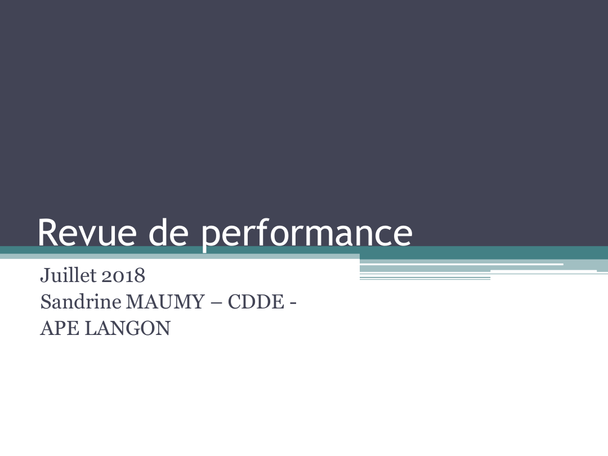
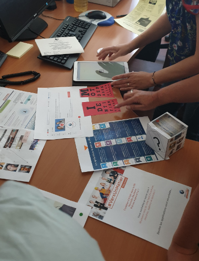

De l'idée
à l'impact
15 ans à observer, questionner, construire, transmettre.

Ce qui reste constant
Je ne pars pas d'une solution. Je pars d'un besoin observé.
Au fil des années, les outils changent, les contextes évoluent, les responsabilités s'élargissent. Ma manière de travailler, elle, reste lisible : comprendre, associer, construire, rendre utile et mesurer.
« Une constance dans la démarche, une évolution dans les réponses. »
Du terrain à l'action
Ce n'est pas nouveau.
Les projets récents ne sont pas des exceptions : ils prolongent une façon de travailler déjà visible dans mes réalisations antérieures.
Le lecteur peut ainsi constater lui-même la continuité : une même logique d'action, appliquée à des contextes de plus en plus larges.
Des résultats qui parlent.
Du besoin à l'impact
Les résultats chiffrés sont distingués des impacts observés non mesurés.
1er point de contrôle
Transformer un indicateur en levier d'action collective.
Partager pour rendre autonome.
Un espace commun pensé pour faciliter l'accès aux ressources, soutenir l'accompagnement et faire vivre une dynamique collective.
ATELIERS
LYCÉENS
Du ponctuel au partenariat.
Sécuriser. Simplifier. Transmettre.
Transformer une matière complexe en ressource compréhensible et directement mobilisable.
Rendre simple ce qui est complexe.
Une offre partenariale structurée en fiches homogènes, lisibles et directement mobilisables par les conseillers.
Faire du jeune l'acteur de son parcours.
Un parcours numérique conçu pour conserver, structurer et réutiliser les apprentissages.
Le prolongement naturel de l'expérience Avenir Pro : passer de l'atelier vécu au parcours que l'élève peut s'approprier et conserver.

DigiNews
Accompagner le collectif dans la transformation digitale.
Rendre les évolutions digitales lisibles et appropriables par les collègues.
Création d'une lettre d'information régulière, complétée par des ateliers de découverte.
Veille · pédagogie · transmission · accompagnement du changement.
Revue de performance
Questionner les pratiques pour améliorer le service.
Des parcours pouvant gagner en personnalisation, fluidité et continuité.
Analyse de l'existant, formalisation d'alternatives, partage de supports et propositions d'organisation.
Autonomie, personnalisation, relation de confiance et efficacité du service.


Espace recruteur
Rendre l'offre de services entreprise compréhensible et utilisable en autonomie.
Support complet couvrant dépôt d'offre, recherche de profils, recrutements, page entreprise, compte et services associés.
Développer l'autonomie des entreprises dans l'utilisation des services numériques.
Autonomie accrue des recruteurs pour créer leur espace recruteur, leur page entreprise et déposer leurs offres en autonomie. Progression observée sur le terrain, sans mesure chiffrée formalisée à l'époque.

Escape game
Créer une expérience collective pour découvrir, coopérer et apprendre autrement.
« Travailler ensemble différemment. »
« Innovant et agréable, ça change ! »
« Cohésion d'équipe, agréable. »
Une animation destinée aux conseillers de différentes dominantes, pensée comme un temps de découverte, de coopération et d'appropriation des services.
Manager, pour quoi faire ?
Développer durablement le pouvoir d'agir de celles et ceux qui composent l'équipe.
Le management n'est pas une rupture avec ma manière d'agir. Il en élargit le périmètre.
- Donner du sensrelier activité, résultats et finalité.
- Créer les conditionspour que chacun puisse agir et progresser.
- Faire vivre le collectifpartager, apprendre, décider, ajuster.
- Piloter avec exigenceobserver les résultats sans perdre de vue les personnes.